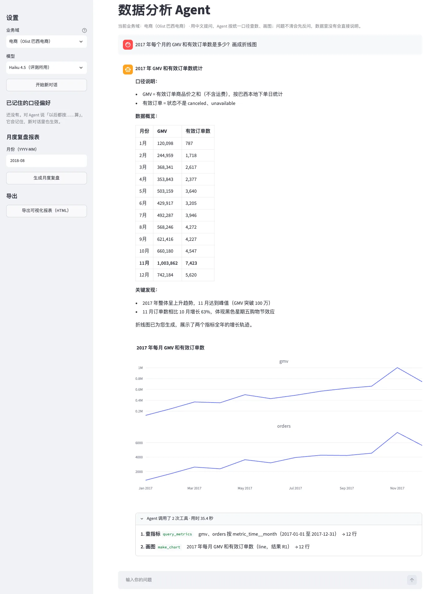

电商经营数仓与数据分析 Agent
业务同学用中文提问，Agent 按统一口径取数、计算、出图并导出报表。我搭了从增量同步到指标层的数仓，在上面用 MCP 和 Skill 做成 Agent，分析引擎和业务配置分开，再用事先锁定的题目验收。
独立项目负责人 · Python、MCP、Skill、RAG（BM25 检索）、MetricFlow、dbt、PostgreSQL、DuckDB、Dagster、Streamlit、Plotly
- Agent
- 8 个 MCP Tool，口径陷阱手册封装为 Skill
- 开发集
- 综合通过率 78% → 92%，按错误归因迭代 5 轮
- 冻结验收
- 通过率 92%（11/12），题目在运行前锁定
- 跨域迁移
- 引擎代码改动 0 行，12 道迁移测试题全部通过
- 指标口径
- 统一 GMV、履约、复购、转化等 25 项
- 数据链路
- 回补 746 个历史业务日，52 条质量检查在 779 次日更中阻断级失败为 0
一个问题进来之后发生了什么
下面四条取自评测运行记录，工具调用和回答都是当时的原始内容，模型是 Claude Haiku 4.5。先看第一条，模型把查询结果手抄进计算语句，服务端拒绝执行，它改用结果编号重算。回答里带下划线的数字，指向算出它的那一步。

前端
我用 Streamlit 做了一个本地前端，和评测用同一套配置。这张是真实运行的截图，用户问 2017 年每月 GMV 和有效订单数，并要求画成折线图。
界面支持多轮对话，运行时能看到每一步调了什么工具、护栏给了什么提示。图表只能用本次会话查出来的结果画，手填的数字进不了图。整段对话可以一键导出成离线打开的可视化报表。
侧栏可以切换业务域、查看和清空记住的口径偏好，也可以按月份生成经营复盘，复盘模板写在领域包里。
模型会犯的错，尽量交给程序拦
这张表里每一行都来自真实运行。能用代码保证的事情，我放在 MCP 服务端做校验，提示词只留下判断类的规则，比如什么时候该反问。
| 错误类型 | 运行中看到的现象 | 现在怎么处理 |
|---|---|---|
| 维度误用 | 模型按 geo__state 分组，这个维度并不存在 | 分组和 where 里的维度名都先和指标目录比对，不存在就直接返回可用维度列表，不调用 MetricFlow |
| 截断后汇总 | 查询返回 130 行、工具只回显前 50 行，模型用看到的部分求和，GMV 环比答成 +143.53% | 截断时在返回里写明不要手工汇总；compute 拒绝读取截断过的结果 |
| 把数字抄进 SQL | 把 6 个月的 GMV 手抄进语句里相加 | 解析语法树检查字面量，VALUES 抄表、5 个以上小数、手填结果里已有的数，都拒绝并提示改用结果编号 |
| 模型心算 | 复核历史运行，发现 5 处心算偏差，都在容差范围内，但模型确实在自己算 | 差值、增长率、占比、合计由 compute 按结果编号执行，输入和公式登记后可以重放；需要人工复核的推算从 5 条降到 2 条 |
| 比率再平均 | 问 2017 年复购率，模型把 12 个月的比率求平均，得 1.31%，同期群口径是 1.35% | 比率类指标按时间分组时，返回里提示要看整段时间就去掉分组，由指标层用分子分母计算 |
| 偏好没有传递 | 用户说 GMV 含运费，模型读到了，客单价却仍用不含运费的 GMV，得 132.06，应为 153.30 | 查询依赖 GMV 的派生指标时，服务端发现已存偏好就提示换算法，上面第二条运行实例就触发了这条提示 |
| 口径不明或超范围 | “哪个品类卖得最好”按 GMV 和按单量答案不同，模型自己挑一个作答 | 常驻规则要求先问清指标、时间和对比基准；数据里没有的内容直接说明无法回答。反问题的问点要问全才算对，开发集从 0/4 提到第 5 轮的 4/4 |
GMV 环比分解的那次错误
业务案例里有一道题，问 2017 年 11 月 GMV 比 10 月涨了多少，增长在哪些州和品类。Agent 第一次答 +143.53%，10 月 512,919.32，11 月 1,249,119.51。标准 SQL 算出来是 660,179.62 到 1,003,862.14，涨幅 +52.1%。
单值题的评测碰不到这个问题。我逐步查运行记录，定位到它把截断的预览手抄进 VALUES 再求和。上表第二、三行的约束就是从这里来的。之后三次重跑，总量和涨幅都和标准结果一致。
系统结构
引擎里不写任何业务内容，数据范围、默认口径和示例都放在领域包，模型看到的规则由引擎的句子骨架和领域包的业务内容拼成。
PostgreSQL按原始时间戳逐日写入新增和状态变更
逻辑复制 · pgoutput945,184 条操作，先落盘再确认位点
dbt · DuckDBODS、DWD、DIM（拉链表）、事实表、DWS、ADS
MetricFlow25 项对外指标，去重和比率由语义层保证
DuckDBAgent 只连副本，运行记录类的表不暴露
Dagster 按日分区调度，T+1 定时推进，文件到达传感器，CDC 阻断式检查，历史回补MCP Server8 个工具、常驻规则的句子骨架、服务端校验、结果登记（R1、R2…）、运行留痕
domains/*.yml数据范围、默认口径、可选偏好、示例、表目录、复盘模板
Claude Code · Skill · Streamlit口径陷阱手册按需加载，前端和评测用同一套配置
| 工具 | 做什么 | 服务端约束 |
|---|---|---|
search_metrics | 检索指标口径说明（BM25） | 检索范围来自领域包的指标说明 |
query_metrics | 通过 MetricFlow 查指标 | 维度名校验、比率分组提示、偏好传到派生指标 |
find_tables | 检索可查的表 | 只暴露领域包允许的表 |
similar_examples | 取相似问题的标准做法 | 示例库只用开发集，看不到留出集和验收集 |
run_sql | 指标层答不了时写只读 SQL | 单条 SELECT、表白名单、禁止读文件、抄数拦截、连续失败 3 次停止 |
compute | 用已查出的结果计算 | 表只能是结果编号，拒绝手填数字和截断结果 |
make_chart | 用已查出的结果出图 | 只接受结果编号 |
save_preference | 记住用户确认过的口径 | 键和值只能取领域包声明的选项 |
怎么验收
开发集用来迭代，留出集和冻结验收集在运行前锁定 SHA256，跑完不再按它们改规则。判分把查询结果、回答、行为分开：计数要完全相等，金额和比例允许 0.5% 相对误差，只出现在回答里的数字要能按查询结果复算才算对。
| 题集 | 题数 | 主配置（指标层优先） | 对照（仅生成 SQL） | 用途 |
|---|---|---|---|---|
| 开发集 | 36 | 28/36 → 33/36（78% → 92%） | — | 按错误归因迭代，结果偏乐观 |
| 留出集 | 24 | 22/24（92%） | 20/24（83%） | 规则定版后只跑不改 |
| 第一份冻结验收集 | 12 | 9/12 | 11/12 | 第 4 轮后验收，暴露的问题进入第 5 轮 |
| 第二份冻结验收集 | 12 | 11/12（92%），答案题 10/10 | 12/12 | 第 5 轮后新出题验收 |
| 同一份，加受控计算后重跑 | 12 | 11/12 | 9/12 | 确认新工具没有带来回退 |
| 第二业务域迁移题 | 12 | 12/12 | — | 引擎不改，只换领域包 |
这张表里我最看重对照组。两份验收集上，仅生成 SQL 的方案都不比主配置差，所以我不主张指标层让 Agent 更准。第 5 轮改的是两组共用的规则，两组一起变好，这一轮的提升来自规则本身。指标层的价值在口径一致，按人去重、跨时间这类题由代码保证，不依赖模型发挥。
对照组同一份题跑两次，一次 12/12，一次 9/12，三道错题都没有用到计算工具。12 道题的样本波动就是这么大，单次分数的差距我不拿来下结论。留出集上换更大的模型，Sonnet 5.5 是 23/24，Haiku 5.5 是 22/24，最多多对 1 题。第二份验收集唯一的错题是一道该拒答的题，问“复购的顾客里有多少是会员”，Agent 指出数据没有会员字段，同时又反问了，判为行为不符。
开发集逐题结果
r2、r3、r5、r6 没有按现行评分器重判，不放进矩阵。B04、C06 在 r8 错、r9 又对，E01 在 r8 对、r9 又错，属于同一配置的运行波动。
每一轮改了什么
- r1 · 28/36第 1 轮 基线两组同跑，先做错误归因。最常见的是比率再平均，反问是共同短板。
- 第 2 轮 服务端护栏偏好传到派生指标，比率按时间分组时提示。
- 第 3 轮 反问规则没说指标或对比基准时先反问，列出候选。
- r4 · 32/36第 4 轮 where 维度校验where 里写错维度名直接返回可用列表。
- r7 · 33/36对标同类项目后的改进回答忠实度检查、可操作报错、实体计数规则。
- r8 · 33/36第 5 轮 截断与反问截断提示和抄数拦截、反问问全、相对时间先说明数据范围、新增看得满 90 天的复购指标。
- r9 · 33/36加受控计算派生数改由程序计算，通过率不变，需要复核的推算减少。
换一个业务要改什么
我把业务口径、数据范围、知识和示例全部抽进领域包，然后接入 dbt 官方的示例项目 Jaffle Shop（三明治连锁店）。只写了 186 行配置和知识文件，引擎代码改动 0 行，12 道迁移测试题全部通过。题和领域包是同一作者写的，样本也小，这个结果只说明引擎里确实没有残留的电商逻辑。
domains/olist.yml 电商# 业务域 name: olist # 数据范围 data: 数据：巴西电商 Olist 2016-09 至 2018-10 的订单（巴西本地时间），有效订单只到 2018-09-03（之后几乎都是取消的单）；另一个网站 RetailRocket 2015-05 至 2015-09 的行为日志（UTC），两者不能关联。 # 数据里没有、要拒答的内容 not_in_data: 利润、成本、广告花费、商品名称、库存、退款、2016 年 1–8 月 # 需要先反问的说法 ambiguous_examples: 「卖得最好」「最有价值」「增长得怎么样」「表现如何」
domains/jaffle.yml 三明治店# 业务域 name: jaffle # 数据范围 data: 数据：虚构的三明治店 Jaffle Shop 2016-09-01 至 2017-08-31 的订单（一年，金额是美元）；登记了 5 家门店，这段时间只有 Philadelphia、Brooklyn 两家有订单。 # 数据里没有、要拒答的内容 not_in_data: 员工、工资、房租、库存、退款、营销花费、顾客性别和年龄、2016 年 9 月之前和 2017 年 9 月之后 # 需要先反问的说法 ambiguous_examples: 「卖得最好」「哪家店更好」「生意怎么样」
下面的数仓
Agent 能答对，前提是下面的口径是对的。原始数据是 Olist 巴西电商约 10 万笔订单和 RetailRocket 275 万条行为日志。Olist 只有最终状态的快照，我用回放器按每笔订单的真实时间戳一天天写进业务库，CDC 抓到的就是这些变化。
黑色是上游，青绿是下游。窄屏可以左右滑动。
工程验收
贴源层 7 张表回放到 2017 年底后，与原数据逐字段一致，两次从零重跑指纹相同。
25 项指标
- 成交
- GMV、含运费 GMV、支付金额、运费、客单价、人均消费
- 订单与卖家
- 有效订单、全部订单、取消率、动销卖家
- 买家与复购
- 买家、新客、90 天复购率、看得满 90 天的复购率
- 履约
- 平均配送天数、配送天数中位数、准时送达率
- 评价
- 评价数、好评率、差评率
- 流量与转化
- 访客、加购转化、购买转化、次日留存、7 日留存
审定口径时最典型的一个是复购率。这份数据每下一单就生成一个新的 customer_id，按它算复购率是 0%，按 customer_unique_id 去重才是 2.83%。另一个是观察窗口，2018 年 6 月起的首单看不满 90 天，原指标会把 2018 年复购率低估约 15%，所以我加了一个只算看得满的版本，默认口径不变。
我做了什么
项目目标、范围和验收标准是我定的。指标里 11 条有分歧的口径由我审定，比如好评率按评价算还是按订单算。不伪造删除事件、按圣保罗时区换算、按错误归因决定每轮改什么、增设仅生成 SQL 的对照组、把业务内容拆成领域包并做跨域验证，这些取舍也是我拍板的。
代码用 Claude Code 写。评测题由 AI 起草，我审核定稿。每一项设计决定都留了书面记录，包括背景、方案、验证结果和没有采纳的选项。
还差什么
- 这是单机项目，数据是公开的历史数据，业务库的变化靠回放产生，没有接过真实线上流量。
- 各题集规模都小，同一配置重复运行有 1 到 2 题波动，通过率要连同样本量一起看。
- 回答正文里顺带提到的数字仍可能是模型自己算的，比如第一条实例里的增长额。评分器会事后复算，但生成时还拦不住。
- 反问和拒答是否问到点上需要读语义，这部分复核留有记录，复核方不是独立第三方。